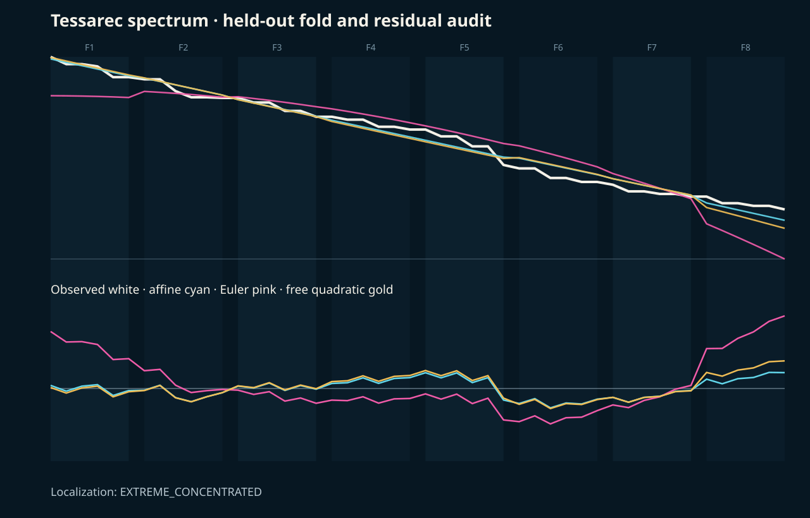
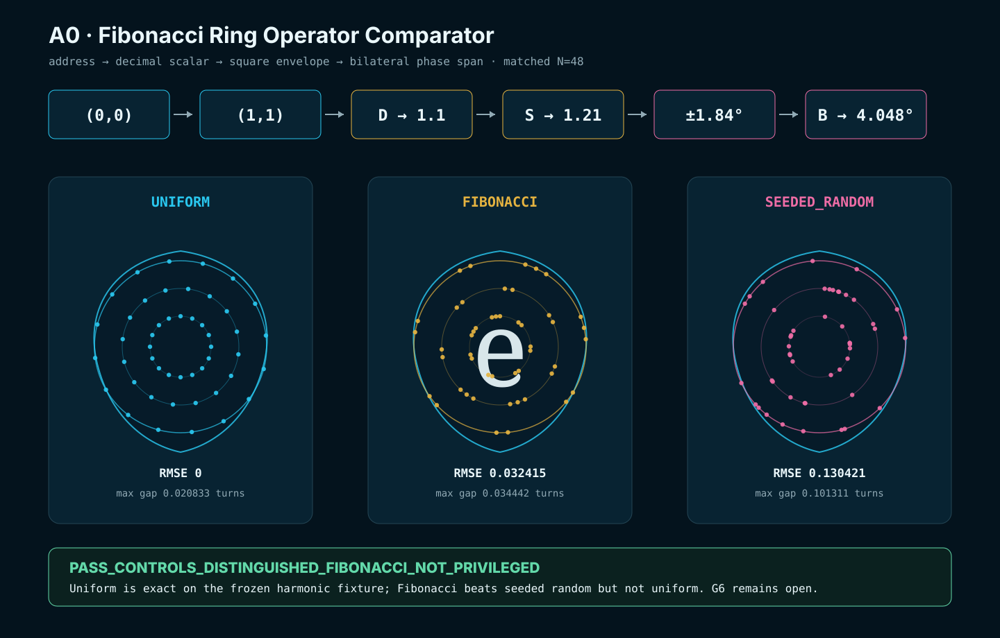

A0 · Gesamtübersicht & Crosswalk · source-bound
The LivingBlueprint.
Das gemeinsame Regal für Träger und Grids, Operatoren, modulare Linsen, Körperansichten und Return. Jedes Werkzeug hat eine Aufgabe, einen Eingang und einen Ausgang. Der Crosswalk zeigt, wo die Werkzeuge zusammenarbeiten und welche Verbindung noch offen ist.
Declared carriers · clear roles · typed joints · source-bound return
Technische Vertiefung · Quellen, Rollen und Lesepfad
Regenbogen / Scarabaeus / CIKADA / Titan · vorhandene Quellen und offene Anschlüsse ↗ · Lesekarte, keine bereits geschlossene Gesamtruntime.
T
Bestehendes Modul · MOD:TESSAREC · gemeinsamer Einstieg
Tessarec: verstehen, bewegen, prüfen.
Frame, Hülle, Beobachter und adressierter Zustand gehören hier zu einem auffindbaren Themenfeld. Das Paper erklärt; die Instrumente machen ausgewählte Regeln bedienbar; die Originalrecords begrenzen die Aussagen. Dieser Sammelpunkt ersetzt weder den registrierten Master noch die einzelnen Quellen.
Blue Body Lab · geführter Einstieg →
Blue / Pink · Zell- und Körperansichten →
Paper F · Gates und Prüfgrenzen →
Wie wir hierher kamen · Entwicklung rückwärts lesen
Diese Spur verbindet die wiedergefundenen Records. Sie ist eine Quellenrekonstruktion, kein vollständiger Chat-Export und kein nachträglich ausgeführter Forschungsrun.
17.10. · Faltung, Flügel und Schatten lesen
Bildidee: gegensinnige Pentagone, farbige Flügel, Lücken und Schatten. Umsetzung: Root7-Buch-/Flügelsequenz, Klappfolge und gemeinsamer Pentagon-Overlay. Prüfgrenze: lokale Pose und Projektion; keine bewiesene Identität mit dem Tessarec-Carrier oder der CIKADA-Reihe.
Flügel / offenes Buch · Klappfolge / Schatten · Schichtenvertrag
15.10. · Innenraum adressieren, Ansichten verbinden
Idee: nicht nur die Hülle sehen, sondern den Zustand dahinter adressieren. Umsetzung: CRT16-Innenraum, Pentagon-Körperansicht und kontrollierte LIFE-Anzeige. Offen: gemeinsame Darstellung ist keine gemeinsame Dynamik; der Transfer behält seine eigenen Return-Grenzen.
14.10. · Bilder als Zustände derselben HTML erkennen
Rückgewonnene Korrektur: Die ersten drei damaligen Screenshots zeigen verschiedene Modi und Zustände von Check 63 in einem Blue-Body-Artefakt — nicht drei Module. Der eigene Fold/Envelope/Frame/State-Crosswalk hält dies bereits fest. Sampling- und Hüllen-Komparatoren wurden getrennt dokumentiert; G6 bleibt offen, Fibonacci wird nicht privilegiert.
Vorhandener Bild-/Zustands-Crosswalk · Hüllen-Komparator · Sampling-Kontrollrecord
13.10. · Vom 48-State-Träger zur Box und zum Spektrum
Fragen: Wie bekommt der Träger eine lesbare Hülle? Wie verbinden sich zwei Körper? Wann treffen die Laschen? Umsetzung: Blue-Body-Host, Doppel-/Heptagon-Linse, 1111-Faser, Box/Kontakt, CON–DAO-Spektralgrid und Antipoden-Return. Prüfgrenze: der Host ist nicht der Carrier; eine kombinatorische Naht ist noch keine kollisionsfreie Raumgeometrie; exakte Rekonstruktion liefert keine E8-Spezifität.
Host / Check 59 · Doppel / Check 60 · 1111-Faser · Box / Kontakt · Zusammenhang 59–66
12.10. · Paper F formuliert die Frage
Idee: Frame-Sequenz, intrinsische Hülle und Beobachter-Cut auseinanderhalten. Umsetzung: Erklärfigur und deklarierte G1–G8-Prüfroute. Engineering-Akzeptanz G1–G4 ist nicht die Schließung der wissenschaftlichen Kontakt-, Sampling-, Ablations- und Return-Gates.
Ältere Grundlage · Root Space, Q, Iota und Pearl
Idee: Layer, gerichteter Schnitt, begrenzte Auswahl und Rücklauf. Umsetzung: Q3→Q4 als 8→16 Vorzeichenzustände, grüne Paarungskanten, Q-Layer, Iota-Cut, Pearl und lokale Zylinderansicht. Der Implementierungsrecord vom 17.09. trennt diese Rollen ausdrücklich; die grüne Verbindung ist nicht schon der gesamte Frame.
Root Space · Implementierungsrecord · Vorhandener Cut-/Frame-Audit · Späterer BLOCK-01-Vergleich
Bildspuren · was wiedergefunden und was noch offen ist

| Bildspur | Gefundene Zuordnung | Status / offene Fuge |
|---|---|---|
| Q · Iota · Pearl | Bild in der Visualsammlung, HTML-Master und Implementierungsrecord | Konkrete Quelle wiedergefunden; kein physikalischer 4D-Beleg. |
| Box / Laschen / Stillpoint | Vorhandener Fold/Envelope/Frame/State-Binder und Check 63 | Mehrere Aufnahmen desselben Artefakts / Checks; Modi und Zustände getrennt. |
| Flügel / Doppel-Pentagon | Flügelsequenz-Record: sechs lokale Bildreferenzen | Am 18.10. lokal erreichbar und hash-identisch geprüft. Nachbarstrang, nicht automatisch derselbe Tessarec-Carrier. |
| Geschichtete Pentagone | Schichten-Record: drei lokale Bildreferenzen | Am 18.10. lokal erreichbar und hash-identisch geprüft. Keine Koordinaten oder Naturgesetze aus dem Bild übernommen. |
| Jüngste Farb-/Zahlrollen und übrige Chatbilder | Theory, Numbermagick und lokale Legenden enthalten Teilspuren | Noch keine vollständige bildweise Zuordnung. Cyan/Gold/Pink, 0/1 und roter Schatten werden nicht zu einer globalen Legende vereinheitlicht. |
Fortschreibregel: Bild / Quelle → gemeinte Frage → vorhandenes Instrument → zugehöriger Prüfbeleg → offene Fuge. Die neun lokalen Referenzen bleiben an ihren Originalorten; kein vollständiges Bildarchiv oder Chat-Export wird behauptet.
Orientierungsweg: Überblick → Paper-F-Figur → gewähltes Instrument → zugehöriger Beleg → Science Desk. Kein neues Modul, keine Carrier-Identität, kein physikalischer 4D-Nachweis und keine Publikationsfreigabe.Mit der Erklärfigur beginnen →
DER LEITGEDANKE · DIE STEINE SIND DA, WIR UNTERSUCHEN DIE FUGEN
TOE ≠ TOi
Das Ganze ist nicht dieselbe Sache wie seine situierte Lesart. NEXAH arbeitet an Orientierung: Wie verbinden wir vorhandenes Wissen, wechseln begründet die Perspektive und halten nachvollziehbar fest, was beim Übergang erhalten bleibt, verloren geht oder hinzukommt?
QUELLE → APERTUR → RECORDRi = P(Ai, ti)(O)
Schematische Leseschreibweise des Visuals: O ist der betrachtete Gegenstand, Ai das deklarierte Sichtfenster, ti der Zeitpunkt und Ri der entstehende Record. P bezeichnet die zu definierende Abbildung, keine vorausgesetzte universelle Projektion.
Was wir daran untersuchen
Die Bausteine stammen aus vorhandenen Wissensfeldern. Unsere Arbeit liegt in den Verbindungen: Vergleich, Übersetzung, Pascal Joint, Schnitt und Return. Eine gemeinsame Darstellung macht verschiedene Träger nicht automatisch identisch. Der Return hält Quelle, Eingriff und verbleibende Differenz lesbar.
NEXAH · Orientierung
Der verständliche gemeinsame Name: vorhandenes Wissen in Beziehung setzen, sich darin zurechtfinden und Handlungsmöglichkeiten beurteilen.
TOI / TOi
Die aktuelle Bildkarte betont die situierte Perspektive i. Im hier verlinkten foundational Essay bedeutet TOI Theory of All Things: eine philosophische Orientierung über Dinge, Beziehungen, Beobachtung, ILAU und den offenen Rest — keine physikalische Theory of Everything. Das historische, quarantänisierte Kürzel Theory of Invariance under Translation bezeichnet eine getrennte Quelle. Ältere TOI-Tafeln zeigen die Vorgeschichte dieser Ideen; Aussagen über ein gemeinsames Feld sind jeweils an den konkreten Quellen zu prüfen. Hier wird keine neue physikalische Theorie oder kanonische Begriffsfamilie eingeführt.
Foundational Essay · unveränderte Owner-Quelle →Family Method / TOI · fortschreibbare Arbeitsfassung →UTG
Unified Transition Geometry: der bereits dokumentierte explorative Rahmen für Übergänge und Orientierung zwischen mathematischen, visuellen, computationalen und erfahrungsbezogenen Darstellungen.
UTG · bestehender Quellenrecord →URF · NEXAH Codex
Vom Owner als zusammengehörige Werklinie erinnert. Der gefundene ältere Architekturgebrauch „URF Axial Space + Root Bridge“ bezeichnet eine geometrische Referenzschicht. Das belegt eine Verwendung des Namens; eine durchgehende Gleichsetzung aller URF-, Codex- und UTG-Verwendungen bleibt eine Quellenfrage.
Historischer URF-Architekturgebrauch →DER GESAMTÜBERBLICK · BESTEHENDE TOOLS, KLARE AUFGABEN
Ein Regal.
Viele Ansichten.
Was ist der Träger? Was verändert ihn? Welche Ansicht entsteht? Und was kommt zurück? Hier stehen die vorhandenen Werkzeuge nach ihrer Aufgabe zusammen.
Zur Tube · Carrier bis Return ↓QUELLEEin deklarierter Ausgangspunkt
Die Mod-Kacheln lesen dieselben Zahlen 0–59. Die Werkzeuge darunter besitzen jeweils ihren eigenen, ausdrücklich benannten Träger.
BASE ≠ MOD ≠ GRID ≠ MODE
Base schreibt eine Zahl als Ziffernwort. Mod liefert einen Rest. Ein Grid ordnet Adressen räumlich an. Ein Mode gehört zu einem benannten Operator. Ein Modul ist ein Werkzeugbaustein.
Base · Mod · Grid · CRT im Grid Atlas →Prime · Base · Mode · vorhandener Research Atlas →Kein Eintrag für diese Suche. Versuche eine Aufgabe wie „Grid“, „Operator“ oder „Return“.
Blue Body · Atari topology prototype
Das Runde ins Eckige — langsam.
Ein kleines, lesbares Fenster in den Blauen Körper: von der äußeren Hülle über eine gekoppelte 16+1-Inspektionsfliese bis zum lokalen Raster. Der größere Adressraum bleibt im Hintergrund; dargestellt werden nur die Zellen, die für den aktuellen Maßstab gebraucht werden.
UTG → A0 → Joint → Result
Ein Dach. Verschiedene Rollen.
Unified Transition / Translation / Transformation Geometry ist das vorhandene Orientierungsdach. A0 ist die mathematische Werkstatt darunter. Die Seiten werden deshalb nicht zu einer einzigen Datei verschmolzen: Sie behalten ihre Quellenverträge, erscheinen hier aber erstmals in einer eindeutigen Lesereihenfolge.
01 · Framework roofUTGGemeinsame Sprache für Field, Orientation, Projection, Stability, Aperture / Transition, Navigation und Reconstruction.Navigator öffnen ↗
02 · Orientation mapA0 Living BlueprintDiese Dachkarte verbindet Carrier, Aperture, Projection, Envelope, Seam, Channel und Return; sie erzeugt keine zweite A0-Identität.Route lesen ↓
03 · Workbench / MathfieldMathematical JointsDie breite mathematische Werkstatt für Grids, Operatoren, Darstellungswechsel, Rekonstruktionsmengen und offene Fugen.Mathfield öffnen ↗
04 · Case dossierPascal–Pentagon Operator JointsDer fokussierte Fall: 106-Knoten-Quotient, 112er-Preclosure, Pentagonmetrik, Kopplungen, Phase und Q106-Return.Fallakte öffnen ↗
05 · Result paperSCC-003Die enge Ergebnisnotiz zum zyklischen Fünf-Flächen-Quotienten. Sie ist kein zweites Mathfield und kein zusätzlicher Testlauf.Paper lesen ↗
Generation Corner und Pink Diamond Grid Atlas sind bedienbare Projektionen vorhandener Records; sie sind weder neue Quellen noch zusätzliche Bestätigungen.
Visual Field Library, Pink Diamond Grid Atlas und Family Connection Atlas katalogisieren Assets, Frames und Übergänge; der Science Navigator bleibt die Quellenlandschaft.
Research Desk und Research Backlog führen Admission, Gates und offene Fragen. Keine Leseseite darf lokal einen Forschungsstatus hochstufen.
Framework status
UTG ist noch keine einzelne Universalhypothese.
UTG ist derzeit exploratives Framework. Formal bestätigt ist nur ein objektspezifischer Aperture/Transition-Kontrollfall; eine domänenübergreifend validierte Anwendung besteht nicht.
A0 hypothesis status · R0 · unadmitted
Der aktuelle prüfbare Kern ist eine typisierte Phasen- und Darstellungsfrage.
S¹ → C₅ → reguläres Pentagon → φ-Readout → Comparator → Return verbindet etablierte Mathematik und vorhandene A0-Ergebnisse, ohne die Objekte gleichzusetzen.
- Exakt: Fünfer-Abtastung des Einheitskreises, reguläre Pentagonmetrik und der endliche Pascal-Quotient.
- Offen: die expliziten Intertwiner zwischen Darstellungen, ein privilegierter Sampling-Mechanismus, Channel-Nutzen und vollständiger wissenschaftlicher Return.
- Nächster Gate: Maps, Invarianten, Residuen und Gegenproben vorab definieren — nicht weitere Motivähnlichkeiten sammeln.
01
Rohrpost · Quelle → Anschluss → Ansicht → Return
So funktioniert die Rohrpost.
Wähle einen konkreten Weg durch die Orientierungsmap. Das Erklärungspaket geht Station für Station weiter und hält vor offenen Anschlüssen an. Es schickt keine Quellbefehle; dafür öffnest du das jeweilige Originalinstrument.
Konzeptioneller Acht-Stationen-Leseloop · bisherige Rohrpost
Erhaltene Erklärung: Carrier bis Return. Eine Bewegung in diesem Leseloop bestätigt keinen ausführbaren Transport. Start nur auf ausdrücklichen Klick.
Navigation ≠ identity · motion ≠ mechanism · view ≠ source
01 / 08
Carrier
EXACT / REUSEDObject
Joint / operation
Boundary
Executable synthesis · two stories · four synchronized views
Vom Modul zum Demonstrator.
Die Module werden nicht länger nur nebeneinander gezeigt. Dieser Crosswalk führt einen gebundenen Record durch Quelle, Adresse, Operator, Projektion, Vergleich und Return. Wähle Blue Body oder GAME 4 LIFE +1 und gehe die Durchführung schrittweise durch. Die gemeinsame Grammatik darf wechseln; Carrier und Updategesetz dürfen es nicht.
Shared record grammar · separate carrier identity · fail-closed Return
Blue Body interior
Source carrier
Application target
Hard boundary
Vier synchrone Ansichten
record: loading01 · frontII + Kern
source
02 · topPentagon / Feld
address
03 · side1–0–1 / Boundary
operator
04 · isometric3D / Temporal-Z
return
01 · Quelle fixieren
- Input
- Operation
- Preserves
- Loses / risk
- Test
READY · source identity fixed
Nicht dekorative Tiefe, sondern eine steuerbare lokale Schicht mit sichtbarer Quelle, Operation und Rückgabe.
Front, Top, Side und Iso lesen denselben Schlüssel. Ein View-Wechsel darf den Carrier nicht heimlich ändern.
Viewport, Aperture und Phase können getrennt abgetragen werden. Fehlende Residuen enden in HOLD.
Blue Body und Life erhalten eigene Carrier und Regeln; nur die demonstratorische Record-Grammatik wird wiederverwendet.
| Gate | Prüfung | Pass | Fail / Hold |
|---|---|---|---|
| T1 · Address | decode(encode(NP,RR,S),S)=(NP,RR) für S=100,1000 | exakter Roundtrip | Adresskollision oder falsche Skala |
| T2 · Phase | c12(n,t+12)=c12(n,t); Rücktick rekonstruiert den vorigen View-State | Periode und Rücklauf exakt | Phase mutiert Source |
| T3 · Four-view sync | Front, Top, Side und Iso tragen denselben Source-Key | ein Record, vier Projektionen | Ansichten driften auseinander |
| T4 · View invariance | Viewport oder Aperture ändern Sichtbarkeit, nicht Carrier-Adresse | Source-Key unverändert | View-Steuerung schreibt State |
| T5 · Application split | Blue Body und GAME 4 LIFE +1 behalten verschiedene Carrier- und Update-IDs | Adapter reuse only | Identitäts- oder Regelmerge |
| T6 · Return | Source, Operator, View-Parameter und Residuum reichen zur Rekonstruktion | PASS_EXACT_RETURN | HOLD_MISSING_WITNESS |
R0 working structure · common comparison field
Das Ghost Grid macht Ansichten vergleichbar.
Es ist kein physischer Raum und kein Weltmodell. Das Grid ist eine vorläufige Adress- und Vergleichsfläche: verschiedene Linsen dürfen denselben gebundenen Ausgangszustand lesen, solange Map, Verlust, Grenze und Return getrennt dokumentiert bleiben.
G = (A,N) · Li: G → Vi · Jij: Bi ↔ Bj · Ri(Vi) → address + provenance + residual
A enthält deklarierte Adressen; N ihre Nachbarschaft. (0,0) und (1,1) sind mögliche Referenzmarker, nicht natürliche Universalpunkte.
Eine Linse liest oder transformiert den Carrier. Dezimal, polar, Euler, Fibonacci oder Pentagon bleiben verschiedene Operatorrollen.
Jede Ansicht deklariert, was sichtbar, verloren, kollidiert oder nicht verfügbar ist.
Nur kompatible Randpositionen werden identifiziert. Ähnliche Form allein erzeugt keine Fuge.
Port, Zustand, Update, Failure Condition und Return machen aus einer Seam einen prüfbaren Transportweg.
Fold oder Projektion erzeugen eine Hülle beziehungsweise einen Readout; der Carrier wird dadurch nicht ersetzt.
Adresse, Provenienz und Residuum kehren zurück, damit Quelle und Ansicht vergleichbar bleiben.
Candidate lens field
Ein Feld, mehrere Maßstäbe.
decimal / radixpolar / angle√2π / Euler phaseφ / pentagonFibonacci sequencePascal recurrence
Die Liste ist ein Arbeitsfeld. Erst eine explizite Funktion Lᵢ legt fest, was eine Linse mit welcher Adresse tut. Gemeinsame Darstellung bedeutet weder Gleichheit noch gemeinsame Ursache.
Evidence and marker ledger
Was bereits trägt — und was noch nur markiert.
Unterschiedliche Carrier beziehungsweise eine begrenzte Koordinatenansicht; der Lift und Return-Key bleiben offen.
Pascal-Mittelwert und getrenntes Multiplicity-/Quotient-Ledger; keine etablierte Base-20-Arithmetik.
Exakter Dezimal-Carry. 202=2×101; „Channel“ bleibt hier Interpretation, nicht Resultat.
Skalierung und Translation sind deklariert; 537=3×179. Die räumliche Grid-Platzierung ist noch offen.
Adress-, Schicht- oder Operatorrolle ist noch nicht eindeutig definiert und keiner gemeinsamen Map zugewiesen.
Sichtbare beziehungsweise vorgeschlagene Skalenfamilie; gemeinsame Erhaltung, Koordinaten und Return sind nicht gezeigt.
Research route: Grid → Lens → Boundary → Typed Seam → Channel → Envelope → Return.
Claim boundary: Das Ghost Grid ist eine dokumentierte Ordnungs- und Prüfstruktur. Es erzeugt keine neue Navigator-Identität, keine neue Graphrelation, keine aktivierte Studie und keine Behauptung, dass Zahlenfolge, Geometrie, Körper oder physikalischer Raum identisch seien.
Documented mathematical hypothesis · R0 · unadmitted
Der Euler-Ring ist der kontinuierliche Phasenträger. Das Pentagon ist seine Fünfer-Abtastung.
Das ist keine Erzählung über ähnliche Symbole, sondern eine typisierte Forschungsannahme. Exakte Standardmathematik, vorhandene A0-Ergebnisse und offene NEXAH-Fragen bleiben voneinander getrennt.
S¹ = {eiθ} · zk = e2πik/5 · k=0…4
|zk−zk+2| / |zk−zk+1| = φ
- Seed
0ist das Zentrum;1setzt den Einheitsradius. - Phase
eiθträgt kontinuierliche Rotation.^ist der Operator; Grad ist ein Winkel-Readout. - SampleFünf Phasen im Abstand von
72°erzeugen ein reguläres Pentagon auf dem Ring. - MetricDas Verhältnis von Diagonale zu Seite liefert exakt
φ. - DiscreteFibonacci-Verhältnisse nähern
φan; Fibonacci bleibt eine eigene Folge beziehungsweise Samplingstrategie. - ReturnEine modulübergreifende Nutzung verlangt Adresse, Map, Residuum und Rückkehrschlüssel.
Diese Kette ist mathematisch exakt.
Die Pentagonmetrik ist gebunden. Der Samplingvergleich ergab Uniform < Fibonacci < Seeded Random; keine Fibonacci-Privilegierung.
Nur mit expliziten typisierten Maps; gemeinsame Form bedeutet keine Identität.
Diese Frage ist dokumentiert, aber nicht als Studie zugelassen oder ausgeführt.

Module source · mathematical typingEuler JointPhase, Topologie, Wurzeln, π und φ bleiben unterscheidbar. Module source · visual examplePascal–PentagonPENT-02 bindet die reguläre Pentagonmetrik; die Tafel selbst ist keine Evidenz.
Module source · visual examplePascal–PentagonPENT-02 bindet die reguläre Pentagonmetrik; die Tafel selbst ist keine Evidenz.

Bounded comparator · result figureFibonacci RingStrukturierter Comparator, aber auf der gefrorenen Fixture nicht privilegiert.Grenze: Euler-Phase ≠ Euler-Charakteristik · S¹ ≠ C₅ · Pentagongeometrie ≠ Pascal-Quotient · φ ≠ Fibonacci · Visualisierung ≠ Beweis.Read full research note ↗
View coupling matrix · same route, different mathematical objects
Was hängt womit zusammen?
Die Tabelle bindet die bereits gebauten Ansichten an ihre tatsächlichen Operatoren. Sie setzt sie nicht gleich. +1 und −1 sind antipodale Phasenzustände; Anfang, Fin beziehungsweise Schweif entstehen erst durch einen gewählten orientierten Lauf. „Scarabline“ bleibt dafür ein Arbeitsname, keine neue mathematische Entität.
| Object / view | Declared mathematics | Coupling operation | Return test | Status / source |
|---|---|---|---|---|
| Origin / seed | 0∈ℂ is the centre; +1=ei0 selects the unit-radius start state. | Choose basepoint and orientation. | Does the address return to +1 with phase and history retained? | standard |
| Euler phase / Scarabline | γ(θ)=eiθ; eiπ=−1; ei2π=+1. | Continuous oriented traversal. Fin/tail are interval roles, not properties of Euler's constant. | γ(0)=γ(2π); winding and traversal history remain distinct. | typed working label Euler-ring note |
| Pentagon sample | zk=e2πik/5, k=0…4; diagonal/side =φ. | Five-state sampling S¹→C₅; geometry then binds to the separate Pascal carrier through PENT-02. | Retain phase index, carrier address and residual; do not identify C₅ with the quotient. | exact + typed bridge Pascal–Pentagon carrier |
| Six roles | S₃ has six carrier-preserving coordinate permutations; its proper-rotation subgroup is C₃. | Discrete automorphism of the trinomial Pascal carrier. This is not the open exterior 5+1 marker and not automatically a C₆ orbit. | Permutation must preserve integer carrier, weights and recurrence edges. | bounded exact Coupling audit |
| Aperture flap / envelope | b=φts, L=ets; first contact occurs at e*=φ/√2≈1.1441. The Pascal seam values are separately all 1; an unextended flap e=1 remains open. | Hinge four apex-truncated pentagons around an oriented square rim. OPEN → TOUCH → OVERLAP_TUCK supplies contact switch points; a signed side coordinate distinguishes selected inside, contact and outside. | Reverse the fold while retaining source flap, side, contact event and residual. The swept envelope must not be collapsed into the carrier, observed view or filled body. | exact planar threshold · kinematic view Fold/contact animation Aperture field note |
| Blue Body shell | Finite connected non-bipartite cubic graph with V=48, E=72. | Host map from the 48 addressed states to a shell graph. | Address bijection, adjacency and graph invariants remain checkable. | exact host Geführter Blue-Body-Test |
| Ihara / Hashimoto | Directed-edge non-backtracking operator and Ihara–Bass determinant on a declared finite graph. For the cubic shell, q=2 and the nontrivial pole circle is |u|=1/√2. | Compress shell walks into primitive cycle classes. Under u=q−s, the circle |u|=q−1/2 corresponds to Re(s)=1/2; this explains the critical-line analogy without identifying graph zeta and Riemann zeta. | The Ramanujan adjacency bound, Hashimoto spectrum / cycle enumeration and Bass determinant must agree on the same declared graph. Here √2 fixes the radius and π parametrizes phase; φ and Fibonacci require a separate map. | numerical pass Ihara cycle bridge Field note |
| 26 / 62 reversal | 26=2·13, 62=2·31, 13↔31, 26↔62; 42=P₁P₂P₄, 20=C(6,3) and 42+20=62. | Candidate crosswalk between the Euler-41 neighborhood, the central Pascal coefficient and a decimal-reversal pair. | Declare a carrier and operator, then test whether source address and inverse remain recoverable. The audit title “Check 62” remains an ordinal and is not evidence for this coupling. | exact arithmetic · operator open 26 / 62 field note |
| Black Sun / Big Moon | Mask/occlusion view on a shared coordinate field; crescent Δ is a visible set difference. | Map phase or carrier state to mask position only after an explicit Φ is supplied. | Recover source address, mask parameter and visible residual. | R0 view coupling open Eclipse view |
Controlling chain: basepoint → oriented phase → antipode
−1 → closure +1 → five-sample pentagon → finite carrier/host → non-backtracking cycle audit → visibility view → declared Return.Mathematical orientation lens · notation, not ontology
Black Sun und Big Moon ordnen eine Frage — sie modellieren keine Welt.
Die Visuals helfen, Grid, Überdeckung, Sichel, Phase und Return auseinanderzuhalten. Die Zeichen darunter sind eine Arbeitsnotation zur Orientierung. Weder Bild noch Notation behaupten einen physikalischen Mechanismus, eine Atomstruktur oder ein mathematisches Weltmodell.
Black Sun
Die hinterlegte, nicht vollständig sichtbare Feldseite. Sie bleibt unter der Überdeckung erhalten; die Darstellung behauptet weder astronomisches Objekt noch neue Carrier-Identität.
Big Moon
Die bewegte Überdeckung im selben Koordinatenfeld. Ihre Verschiebung verändert, welcher Anteil der Black Sun als Sichel beziehungsweise Grenzrest sichtbar bleibt.
Crescent Δ
Die Sichel ist nicht ein dritter Körper, sondern der lesbare Rest der Überlagerung: eine visuelle Hypothese für Differenz, Boundary und Return.
Big Egg / NEON
Big Egg ist die aufklappbare Body-Ansicht, keine Zwischenstation. NB steuert anschließend Sichtbarkeit und Kontrast des aufgezeichneten Restes.
fixed fieldx
transformT(x)
recordR(T(x))
visible outputy(B) = NB(R(T(x)))
declared return(x, y(B), ΔB)
Gemeinsamer Bezugspunkt des gezeichneten Feldes; noch keine universelle Ursprungsbehauptung.
Winkel- beziehungsweise Ringablesung. Der Marker ist nicht selbst der Carrier.
Glyph für die überdeckende Moon- beziehungsweise Orbitposition im Feld.
Kandidat für die Bindung zwischen Ursprung, bewegter Überdeckung und sichtbarem Rest.
Fünf innere Pentagonpositionen plus äußerer sechster Beobachter-/Kontrollpunkt; Relation noch offen.
Grid, Überdeckung, Sichel, B-Zustände und Return-Routen können getrennt gelesen und zu ihren vorhandenen Quellen zurückverfolgt werden.
M, O und 5+1 sind vorläufige Orientierungsmarker. Sie beweisen keine Invariante, keine Teilchenzuordnung und keinen Mechanismus. 7.83 bleibt eine visuelle Zeitadresse.
Mathematical track
Was formal transportiert wird.
- Adresse und CarrierQ4×P3 beziehungsweise deklarierter endlicher Träger.
- Map und ProjektionQuelle, Parameter, Verlust und Kollision bleiben getrennt.
- Hülle und GrenzeIntrinsische und beobachtete Envelope sind nicht automatisch identisch.
- Interface und UpdateEine Seam wird erst mit Port, Zustand und Update zu einem Channel.
- ReturnAdresse, Provenienz, Residuum und Failure State kehren gemeinsam zurück.
Human track
Wie dieselbe Reise erlebt wird.
- OutsideEine sichtbare Hülle erscheint als Körper.
- ContactDie Aperture macht eine auswählbare Grenze sichtbar.
- InsideHinter der Hülle liegt ein adressiertes Feld, kein mystisches Innen.
- LifeLokale Übergänge verändern den Zustand, nicht seine Herkunft.
- MemoryDer aktuelle Zustand und seine Spur bleiben unterscheidbar.
02
Rooms connected by the spine
Die Module sind Stationen.
Jeder Raum beantwortet eine andere Frage. Die Karte behauptet nicht, dass seine Geometrie, Zeit oder Evidenz mit den anderen identisch ist.
Vocabulary / contractsPattern ToolboxAperture, Projection und Relation als drei gebundene Signaturen.Open toolbox →
Carrier / shellBlue Body LabEin geführter 48-State-Test; Fold, Sampling und weitere Linsen bleiben optional.Start guided test →
Open / closed comparisonDodeca CountershotOffener Host und geschlossene Pentagonhaut, verbunden durch einen typisierten Residual-Ledger.Compare bodies →
Outside / insideLiving InteriorPassage von sichtbarer Hülle über Kontakt und Zelle zu Life und Memory.Enter passage →
Synchronized readingFamily AtlasMehrere Linsen lesen denselben gebundenen Zustand, ohne ihre Gegenstände gleichzusetzen.Open atlas →
Seam / quotientPascal–PentagonFünf Carrier, exakte Seam-Klassen, Pentagongeometrie und kontrollierte offene Fugen.Inspect seam →
Finite graph / cycle returnIhara / HashimotoGerichtete Kanten, Non-Backtracking-Übergänge, primitive Zyklen und Ihara–Bass-Gegenrechnung auf deklarierten Graphen.Inspect cycles →
Frame / envelopePaper FR0-Entwurf zur Trennung von Frame, intrinsischer Hülle und beobachtetem Readout.Read contract →
Provenance / returnPaper CReturn bewahrt Wiederauffindbarkeit, ohne Identität oder Geschichte zu behaupten.Read return →
03
Read-only desk projection
Offene Fragen am Blueprint.
Nur die Backlog-Punkte, die diesen Transportweg unmittelbar berühren. Die Karte zeigt den Zusammenhang; sie verwaltet keine Aufgaben.
Wann wird eine Seam zu einem nützlichen Channel?
Admission requiredCarrier, Fold, Embedding, Envelope, Interface, Assembly, Update und Return müssen an mindestens zwei nicht-identischen Kontrollen formalisiert und verglichen werden.
Welche Gates schließen den Transportweg?
Open gatesContact, Sampling, Ablation und wissenschaftlicher Return bleiben getrennte Prüfstellen. Ihre Reihenfolge ist Orientierung, noch kein ausgeführter Run.
Welche Adresse rekonstruiert exakt?
Prepare · not executableRelationsobjekt, Koordinatentrennung, Darstellungsaccounting, Return-Level und Non-Identity-Kontrollen sind dokumentiert, aber nicht zur Ausführung zugelassen.
Keine lokale Task-Autorität: Diese Auswahl ist eine Leselinse, kein zweiter Backlog.Authoritative backlog ↗
Gebaut und gebunden: Instrumentkopplung, Darstellungswechsel, endliche Carrier, begrenzte Comparatoren und maschinenlesbare Crosswalks. Diese Seite verwendet bestehende A0-, Tessarec-, Toolbox- und SCC-003-Identitäten.
Weiter offen: G5 Contact, G6 Sampling, G7 Ablation, G8 Return, echte gekoppelte Gegenrotation, kollisionsfreie 3D-Realisierung, Materialstärke, globale Optimalität, externe Neuheit und physikalischer Mechanismus.
Wie geht es weiter?
Du hast das gemeinsame Regal gesehen. Der Positionsbericht trennt nun belegte Ergebnisse, gebaute Instrumente und offene Fragen.
← Zurück: Zusammenhänge verstehenWeiter: Ergebnisse & Grenzen →Leseführung, keine Übertragung laufender Instrumentzustände. Bestehende szenengebundene Hin-/Rückwege bleiben separat erhalten.